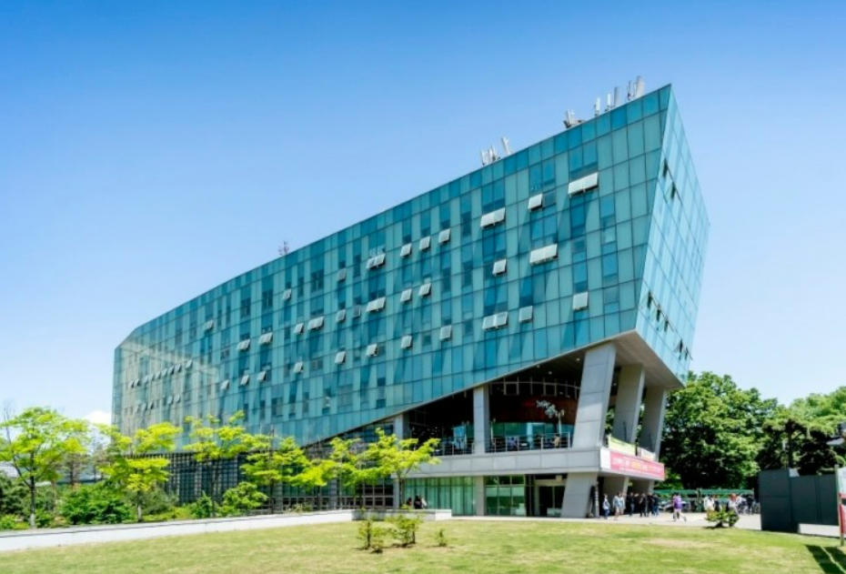
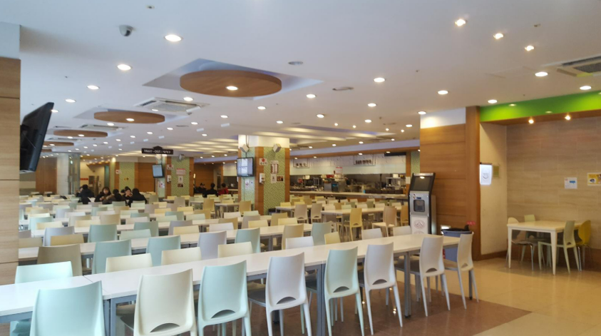
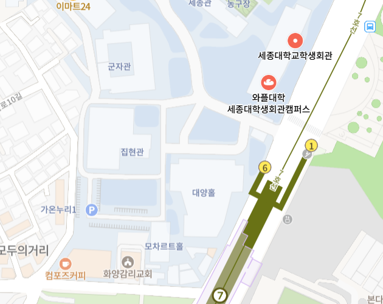
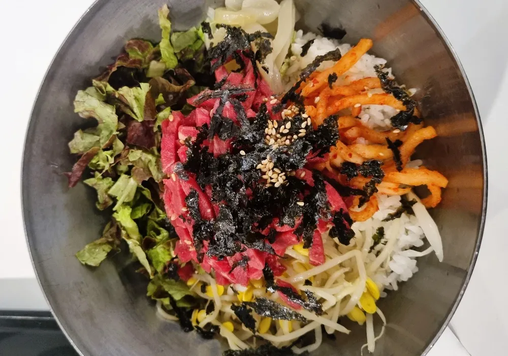
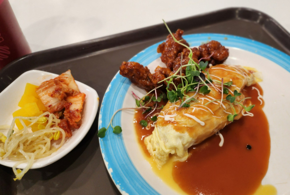
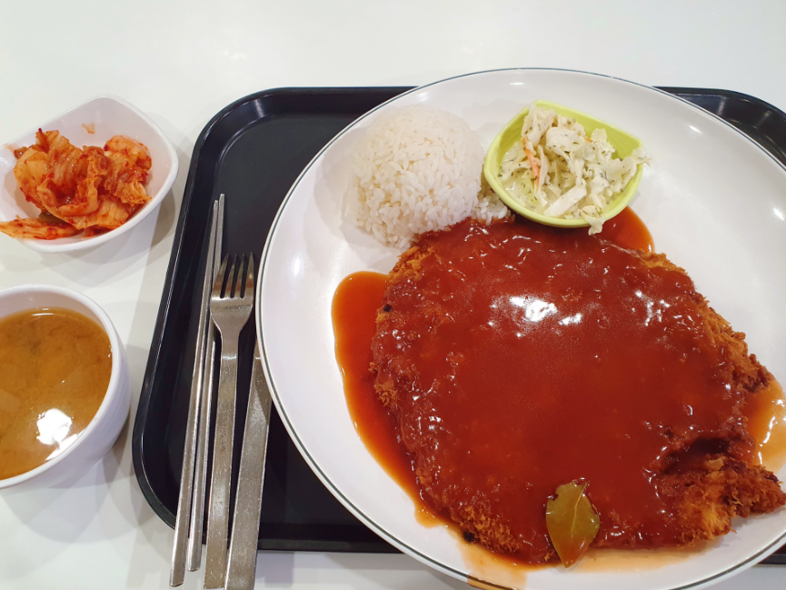

| 육회비빔밥 | 닭강정 오므라이스 | 세종대왕돈까스 | |||
|---|---|---|---|---|---|
|

|
가격최신업데이트안됨... 마지막으로 먹었을 때 5000원이던가... 5500원이었나 6000원이었나... 맛있어요! 홍석천이원일 유튜브에 나왔고 가성비 굿 |

|
빨리 나와요 그리고 오므라이스가 맛있어요 타이밍 잘 맞으면 맛있는 닭강정을 먹을 수 있답니다 |

|
세종대 왕돈까스 세종대왕 돈까스 세종VS왕돈까스 전 안 먹어봤는데 배고플 때 배부르게 먹고 싶을 때 먹는다고 하더라구요 |
| 맛 | 거리 | 청결 | 식곤증 | 재방문의사 | 한줄평 | |
|---|---|---|---|---|---|---|
| 팀원1 | 4.3 | 5 | 4.4 | 5 | 4.3 |
3월의 학생회관 식당에는 사람이 정말정말 많아요 세종대 건국대 한양대 만남의 장소,,, |
| 팀원2 | 4 | 5 | 5 | 4 | 4.5 | 닭강정 오므라이스 맛있게 잘 먹었습니다 |
| 팀원3 | 5 | 4 | 5 | 5 | 5 | 학식에서 만난 육회비빔밥의 맛은 특별했습니다! |
새우튀김알밥 무난하게 맛있음
스팸치즈순두부찌개 아는 사람만 아는 존맛 메뉴
방금
찾아봤는데 사라졌다는 말도 있어서 메뉴에 있다면 한 번쯤
드셔보세요~~
우삼겹된장찌개 스팸치즈순두부찌개처럼 자주 사라졌다가 갑자기 등장하는 메뉴인데 추울 때 비올 때 자주 먹었던 기억이 나네요
소금구이덮밥 제가 새내기였을 때 제일 유명했던 메뉴예요
소스에
고기를 찍어드시면 됩니다... 좀 짤 수 있으니 적당히 찍어야 돼요
돈까스냉모밀 제친구는맨날이것만먹었어요
가끔 럭키비키참치비빔밥, 마그마굽네덮밥(?) 이런 알
수 없는 메뉴들이 나오는데 생각보다 먹을만 해요
가격대는
3500~6000원 정도 되는 것 같습니다
김원관(컴포즈건물) 나와서 끼고 오른쪽으로 돌면 길이 쭉~~ 있어요
가다보면 오른쪽에 문이 있는데 쪽문 입니다
군자관 진관홀 가실 거면 쪽문이 빨라요
근처느낌좋은카페[롬곡][보난자]느낌안좋은카페[매머드커피(김원관앞)][컴포즈커피(김원관)][투썸(대양AI센터1층)][제주몰빵(학생회관2층)]